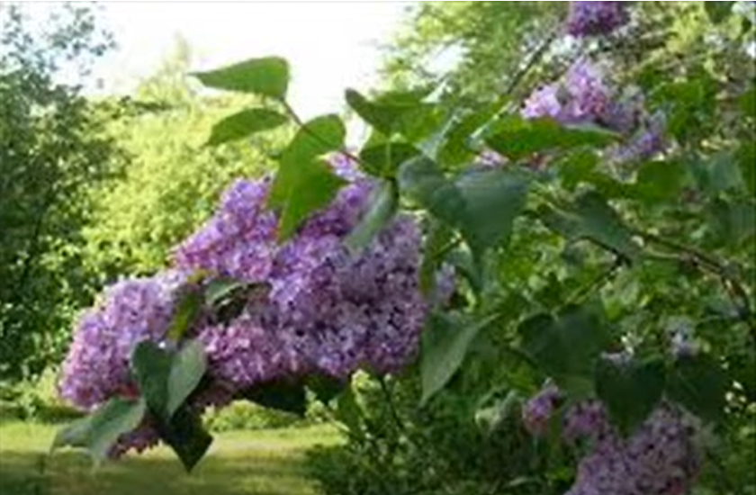
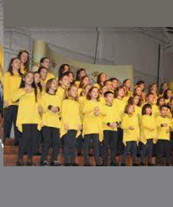
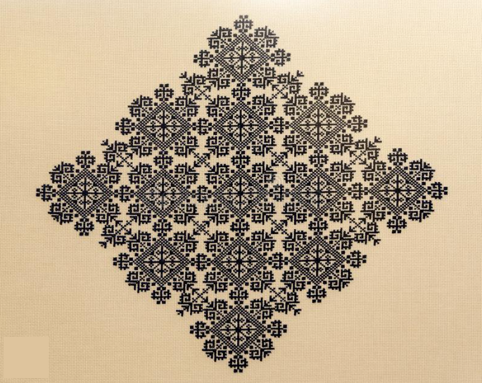

3 Razgrana se grana jorgovana
Un lilas déployait ses branches
(Osma Rukovet - 8ème guirlande :03:18 -03:56 )
|
 |
|
|
|
 "" - Version Mokranjac |
 "Razgrana" - Chanté par Le choeur d'enfants "Kolibri" |
 "Razgrana" chanté par Ranko Å emiÄ (extrait) |
NOTES
|
[1] Savremena verzija Ranka Å emicÌa usvaja neparan 7/8 ritam, karakteristiÄan za muziku Bugarske-Makedonije-Albanije. Nekoliko reÄi koje se odnose na veÅ¡tinu vezenja koje se koriste u pesmi su turske: âÄerdžefâ (okvir za vezenje, turski: âcercevâ), âmerdžanâ (koral, turski: âmercanâ), âÄundžulijaâ (drangulija, ovde: ukrasne Å¡are). Tokom 500 godina suživota, narodi Balkana nisu samo razmenjivali udarce maÄeva i topova sa otomanskom civilizacijom! [2] Iako Mokranjac svoj 8. venac titluje âPesme sa Kosovaâ, duži tekst âVikizvornikaâ pokazuje da ova pesma mora da potiÄe iz primorja. Ovo sugeriÅ¡e ujak moreplovac i evokacija Venecije, oznaÄena dijalekatskim pridevom âvenediÄkiâ. Å taviÅ¡e, pronaÅ¡ao sam samo joÅ¡ jednu pojavu reÄi âÄunÄulijaâ: nalazi se u izveÅ¡taju o parohijskom proslavljanju Svetog Jovana u Dobranju, kod Splita, u ikavskoj Hrvatskoj, sa znaÄenjem âdranguljaâ. |

|
[1] La version moderne de Ranko Å emiÄ adopte un rythme impair 7/8, caractéristique de la musique de Bulgarie-Macédoine-Albanie. Plusieurs mots relatifs à l'art de la broderie utilisés dans le chant sont turcs: "djerdjef" (cadre à broder, turc:"çerçev"),"merdjan" (corail, turc: "mercan"), "djundjulija" (babioles). Au cours de 500 ans de cohabitaion, les peuples des Balkans n'ont pas échangé que des coups d'épées et de canons avec la civisation ottomane! [2] Bien que Mokranjac sous-titre sa 8ème guirlande "Chants du Kosovo", le texte complet de "Vikizvornik", montre que le présent chant doit provenir d'une région côtière. C'est ce que suggère l'oncle navigateur et l'évocation de Venise, désignée par l'adjectif dialectal "venediÄki". De plus, je n'ai trouvé qu'une seule autre occurrence du mot "ÄunÄulija": c'est dans un compte-rendu d'une fête paroissiale de la Saint-Jean à Dobranje, près de Split, en Croatie "ikavienne", avec le sens de "babioles". Le mot serbe usuel est un doublet de ce mot turc: "drangulija". |